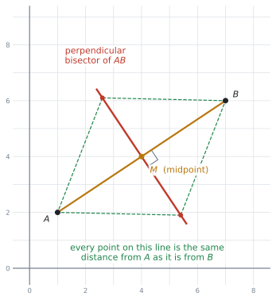
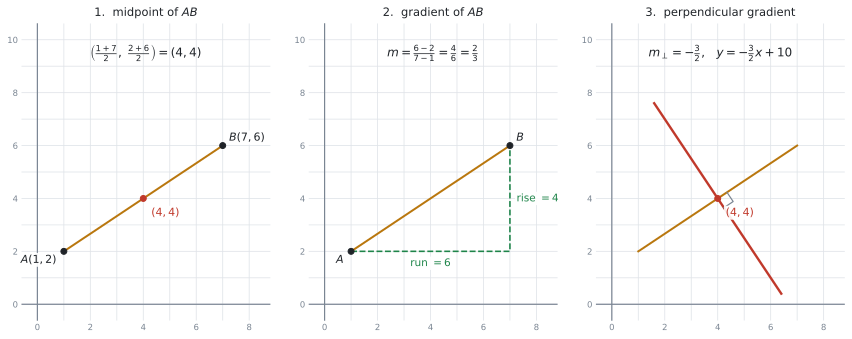
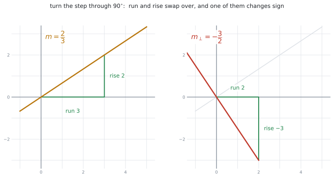
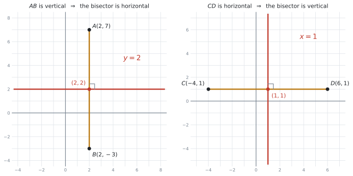
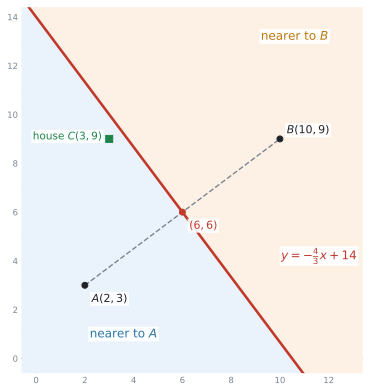
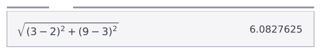

SL 3.5 — Equations of perpendicular bisectors（垂直二等分線の式）
- perpendicular bisector（垂直二等分線）が、2点から等しい距離にある点の集まりだと分かる。
- 2点の座標から、垂直二等分線の式を求められる。
- 垂直な直線の傾き \(m_{\perp} = -\dfrac{1}{m}\) を使える。← 公式集にありません
- 線分がたて（vertical）・よこ（horizontal）のときの特別な形が書ける。
- 線分の式と中点が与えられた場合にも答えられる。
- 答えを \(y = mx + c\) でも \(ax + by + d = 0\) でも書ける。
- 「どちらの点に近いか」を、垂直二等分線を使って判断できる。
公式集の Topic 3 の欄には、3.5 という項目はありません。 ですが、この項目で使う式はほとんど公式集にあります。ただし、別のページに散らばっています。
Topic 2 の 2.1 の欄（Equations of a straight line、Gradient formula）
\[ y = mx + c \ ; \quad ax + by + d = 0 \ ; \quad y - y_{1} = m(x - x_{1}) \tag{1}\]
\[ m = \frac{y_{2} - y_{1}}{x_{2} - x_{1}} \tag{2}\]
Topic 3 の Prior learning – SL の欄（3.1 の少し前にあります）
\[ \left( \frac{x_{1} + x_{2}}{2}, \ \frac{y_{1} + y_{2}}{2} \right) \tag{3}\]
\[ d = \sqrt{(x_{1} - x_{2})^{2} + (y_{1} - y_{2})^{2}} \tag{4}\]
この4つは配られます。覚える必要はありません。 ただし、どのページに載っているかは知っておいてください。 試験中に公式集をめくって探す時間が惜しいからです。
\[ m_{\perp} = -\frac{1}{m} \qquad \text{（同じことですが）} \qquad m \times m_{\perp} = -1 \tag{5}\]
この項目で、覚える必要があるのはこれ1つだけです。ほかは全部、公式集を見れば書いてあります。
一般の斜めの線分では、この関係が計算の中心になります。ただし、線分がよこ向き（horizontal）やたて向き（vertical）のときは、\(m = 0\) だったり傾きが定義できなかったりするので、この式は使わず、図から判断します（第4節）。
The idea
1. perpendicular bisector は「等しい距離」の線です
まず、名前を2つに分けて読んでください。
- bisector … 二等分するもの（bi = 2、sect = 切る）
- perpendicular … 垂直
つまり、線分 \(AB\) の perpendicular bisector とは、\(AB\) を真ん中で、直角に切る直線です。

2. 手順は4つです
2点 \(A\)、\(B\) の座標が与えられたら、次の順に進みます。

手順1と手順2は、どちらを先にしても答えは同じです。ですが、中点を先に出すことをすすめます。
理由は、中点を出し忘れる答案が多いからです。傾きの計算に気を取られて、「\(A\) を通る直線」を書いてしまいます。
最初に中点を書いてしまえば、忘れようがありません。
手順4の式のえらび方
直線の式は、式 1 に3つの形があります。このどれかを使いましょう。
- \(y - y_{1} = m(x - x_{1})\) … 通る点と傾きが分かっているとき。まずこれを書きます
- \(y = mx + c\) … 上の式を展開して整理した形。答えはたいていこの形にします
- \(ax + by + d = 0\) … 分数を消したいときの形。問題文で指定されることがあります
中点 \((x_{1}, y_{1})\) と傾き \(m_{\perp}\) を、そのまま 1 つめの式に入れるのが一番速く、一番間違えにくいやり方です。
3. 垂直な傾き \(-\dfrac{1}{m}\)
傾き \(m\) の直線に垂直な直線の傾きは、\(-\dfrac{1}{m}\) です。言いかえると、ひっくり返して、符号を変えます。 記号 \(m_{\perp}\) を使っておくと分かりやすくなります。

図 3 の左は傾き \(\dfrac{2}{3}\) の直線で、右へ \(3\)、上へ \(2\) の階段になっています。この階段を \(90^\circ\) 回すと、右へ \(2\)、下へ \(3\) の階段になります。だから傾きは \(-\dfrac{3}{2}\) です。
| もとの傾き \(m\) | 垂直な傾き \(m_{\perp}\) | やったこと |
|---|---|---|
| \(\dfrac{2}{3}\) | \(-\dfrac{3}{2}\) | ひっくり返して、符号を変えた |
| \(4\) | \(-\dfrac{1}{4}\) | \(4 = \dfrac{4}{1}\) と見る |
| \(-\dfrac{1}{2}\) | \(2\) | ひっくり返すと \(-2\)、符号を変えて \(2\) |
| \(-3\) | \(\dfrac{1}{3}\) |
- \(\dfrac{2}{3}\) の垂直は \(-\dfrac{2}{3}\) ではありません（符号しか変えていません）
- \(\dfrac{2}{3}\) の垂直は \(\dfrac{3}{2}\) でもありません（ひっくり返しただけです）
必ず両方やります。確かめ方は \(1\) 行で、2つを掛けて \(-1\) になれば正しいです。
\[ \frac{2}{3} \times \left(-\frac{3}{2}\right) = -1 \ ✓ \]
4. たて・よこの線分は、特別な形になります
\(-\dfrac{1}{m}\) は、\(m = 0\) のときに使えません（\(0\) で割れないからです）。ですから、線分がよこ向き・たて向きのときは、式ではなく図で考えます。

| 線分 \(AB\) | 見分け方 | 垂直二等分線 |
|---|---|---|
| たて（vertical） | \(x\) 座標が同じ | よこの線。\(y = (\text{中点の } y)\) |
| よこ（horizontal） | \(y\) 座標が同じ | たての線。\(x = (\text{中点の } x)\) |
\(A(2, 7)\) と \(B(2, -3)\) のように \(x\) が同じなら、線分はたてです。傾きの計算は要りません。
中点は \((2, 2)\) なので、垂直二等分線は \(y = 2\) です。それだけです。
\(C(-4, 1)\) と \(D(6, 1)\) のように \(y\) が同じなら、線分はよこ。中点は \((1, 1)\) で、答えは \(x = 1\) です。
この2つは、計算が要らないぶん、点を取りやすい問題です。
5. もう1つの出題型：線分の式と中点が与えられる
シラバスの Guidance 欄に、出題のしかたが2通り書かれています。
Given either two points, or the equation of a line segment and its midpoint.
2つめは、\(A\) と \(B\) の座標が出てこない形です。たとえば、こう聞かれます。
The line segment PQ lies on the line\(y = 2x - 5\). The midpoint of PQ is M(4,3).
このときは、手順1と手順2がすでに済んでいると考えてください。
- 通る点 … \(M(4, 3)\)（もう与えられています）
- \(PQ\) の傾き … \(y = 2x - 5\) の \(m\) を読むだけで \(2\)（計算は要りません）
あとは手順3と手順4だけです。\(m_{\perp} = -\dfrac{1}{2}\) で、\(y - 3 = -\dfrac{1}{2}(x - 4)\) となります。
線分の式が \(3x + 4y - 12 = 0\) のような形で与えられることもあります。このときは、まず \(y = \ldots\) の形に直してから傾きを読みます。
\[ 4y = -3x + 12 \quad \Rightarrow \quad y = -\frac{3}{4}x + 3 \quad \Rightarrow \quad m = -\frac{3}{4} \]
6. 検算のしかた
答えが出たら、中点を自分の式に代入してください。左辺と右辺が一致すれば、少なくとも「中点を通る」ことは確かめられます。
もっと強い検算をしたいときは、自分の式の上の点を1つ選んで、\(A\) と \(B\) までの距離を 式 4 で出します。 等しくなれば、その直線は垂直二等分線です。
Why it works
なぜ「\(A\) と \(B\) から等距離の点」を集めると、\(AB\) の垂直二等分線になるのかを説明します。
点 \(P\) が \(A\) からも \(B\) からも同じ距離にあるとします。すると、三角形 \(PAB\) は \(PA = PB\) の二等辺三角形です。
二等辺三角形では、頂点 \(P\) から底辺 \(AB\) に下ろした線が、底辺をちょうど半分に切り、しかも直角になります（数学Iで習う性質です）。
つまり \(P\) は、\(AB\) の中点を通り、\(AB\) に垂直な直線の上にあります。どの \(P\) を選んでも同じなので、等距離の点を全部集めると、その直線になります。
逆に、その直線の上の点はどれも二等辺三角形の頂点になるので、\(A\) と \(B\) から等距離です。だから「等距離の点の集まり」と「垂直二等分線」は、同じものです。
Worked examples
問題文は英語です。意味が理解できなかったら、問題文の下の「日本語訳」を開いてください。解説は日本語です。
例題 1 The points \(A\) and \(B\) have coordinates \(A(1, 2)\) and \(B(7, 6)\).
(a) Find the coordinates of the midpoint of \(AB\).
(b) Find the gradient of \(AB\).
(c) Find the equation of the perpendicular bisector of \(AB\), giving your answer in the form \(y = mx + c\).
日本語訳
点 \(A\) と \(B\) の座標は \(A(1, 2)\)、\(B(7, 6)\) です。
(a) \(AB\) の中点の座標を求めなさい。
(b) \(AB\) の傾きを求めなさい。
(c) \(AB\) の垂直二等分線の式を、\(y = mx + c\) の形で求めなさい。
設問が (a)(b)(c) に分かれていますが、これは第2節の手順そのままです。問題文が手順を教えてくれています。
(a) 式 3 です。\(x\) 同士、\(y\) 同士を足して \(2\) で割ります。
\[ \left( \frac{1 + 7}{2}, \ \frac{2 + 6}{2} \right) = (4, 4) \]
(b) 式 2 です。
\[ m = \frac{6 - 2}{7 - 1} = \frac{4}{6} = \frac{2}{3} \]
(c) ひっくり返して、符号を変えます。
\[ m_{\perp} = -\frac{3}{2} \]
通る点は (a) の \((4, 4)\) です。式 1 の1つめの形に入れます。
\[ y - 4 = -\frac{3}{2}(x - 4) \]
\(y = mx + c\) の形に直します。右辺を展開すると \(-\dfrac{3}{2}x + 6\) です。
\[ y = -\frac{3}{2}x + 6 + 4 = -\frac{3}{2}x + 10 \]
検算。 中点 \((4, 4)\) を入れると \(-\dfrac{3}{2}(4) + 10 = -6 + 10 = 4\) ✓
もう1つ確かめます。\(x = 0\) のとき \(y = 10\) なので、点 \((0, 10)\) もこの直線の上にあります。
\[ (0,10) \text{ から } A: \sqrt{1^{2} + 8^{2}} = \sqrt{65}, \qquad (0,10) \text{ から } B: \sqrt{7^{2} + 4^{2}} = \sqrt{65} \ ✓ \]
等距離になりました。 これでこの直線が垂直二等分線だと確かめられます。
(a) \(\left(\dfrac{1+7}{2}, \dfrac{2+6}{2}\right) = (4, 4)\)
(b) \(m = \dfrac{6-2}{7-1} = \dfrac{2}{3}\)
(c) \(m_{\perp} = -\dfrac{3}{2}\)
\(y - 4 = -\dfrac{3}{2}(x - 4)\)
\(y = -\dfrac{3}{2}x + 10\)
例題 2 The points \(P\) and \(Q\) have coordinates \(P(-3, 5)\) and \(Q(5, -1)\).
(a) Find the equation of the perpendicular bisector of \(PQ\), giving your answer in the form \(y = mx + c\).
(b) Write your answer to part (a) in the form \(ax + by + d = 0\), where \(a\), \(b\) and \(d\) are integers.
日本語訳
点 \(P\) と \(Q\) の座標は \(P(-3, 5)\)、\(Q(5, -1)\) です。
(a) \(PQ\) の垂直二等分線の式を、\(y = mx + c\) の形で求めなさい。
(b) (a) の答えを、\(a\)、\(b\)、\(d\) が整数である \(ax + by + d = 0\) の形で書きなさい。
(a) 今回は設問が分かれていないので、手順を自分で並べます。
中点。 負の数が入るので、カッコを付けて書いてください。
\[ \left( \frac{-3 + 5}{2}, \ \frac{5 + (-1)}{2} \right) = \left( \frac{2}{2}, \ \frac{4}{2} \right) = (1, 2) \]
傾き。
\[ m = \frac{-1 - 5}{5 - (-3)} = \frac{-6}{8} = -\frac{3}{4} \]
垂直な傾き。 ひっくり返すと \(-\dfrac{4}{3}\)、符号を変えて \(\dfrac{4}{3}\) です。
\[ m_{\perp} = \frac{4}{3} \]
検算。 \(-\dfrac{3}{4} \times \dfrac{4}{3} = -1\) ✓
式。 \((1, 2)\) を通って傾き \(\dfrac{4}{3}\) です。
\[ y - 2 = \frac{4}{3}(x - 1) \]
\[ y = \frac{4}{3}x - \frac{4}{3} + 2 = \frac{4}{3}x + \frac{2}{3} \]
(b) where a, b and d are integers とあるので、分数を消します。 両辺に \(3\) を掛けます。
\[ 3y = 4x + 2 \]
すべて左辺に集めます。
\[ 4x - 3y + 2 = 0 \]
検算。 中点 \((1, 2)\) を入れると \(4(1) - 3(2) + 2 = 4 - 6 + 2 = 0\) ✓
両辺を \(-1\) 倍した \(-4x + 3y - 2 = 0\) も、\(2\) 倍した \(8x - 6y + 4 = 0\) も正しい式です。
ふつうは、\(x\) の係数を正にして、共通因数のない形にします。今回なら \(4x - 3y + 2 = 0\) です。
(a) Midpoint \(= \left(\dfrac{-3+5}{2}, \dfrac{5-1}{2}\right) = (1, 2)\)
\(m = \dfrac{-1-5}{5-(-3)} = -\dfrac{3}{4}\), so \(m_{\perp} = \dfrac{4}{3}\)
\(y - 2 = \dfrac{4}{3}(x - 1)\), so \(y = \dfrac{4}{3}x + \dfrac{2}{3}\)
(b) \(3y = 4x + 2\), so \(4x - 3y + 2 = 0\)
例題 3 (a) The points \(A\) and \(B\) have coordinates \(A(2, 7)\) and \(B(2, -3)\). Find the equation of the perpendicular bisector of \(AB\).
(b) The points \(C\) and \(D\) have coordinates \(C(-4, 1)\) and \(D(6, 1)\). Find the equation of the perpendicular bisector of \(CD\).
日本語訳
(a) 点 \(A\) と \(B\) の座標は \(A(2, 7)\)、\(B(2, -3)\) です。\(AB\) の垂直二等分線の式を求めなさい。
(b) 点 \(C\) と \(D\) の座標は \(C(-4, 1)\)、\(D(6, 1)\) です。\(CD\) の垂直二等分線の式を求めなさい。
まず座標を見くらべてください。 どちらも、\(x\) か \(y\) のどちらかが同じです。特別な形になる合図です。
(a) \(A\) も \(B\) も \(x = 2\) なので、線分 \(AB\) はたてです。中点は
\[ \left( \frac{2 + 2}{2}, \ \frac{7 + (-3)}{2} \right) = (2, 2) \]
たての線分に垂直なのはよこの線なので、答えは \(y\) が中点の値で一定です。
\[ \boxed{y = 2} \]
(b) \(C\) も \(D\) も \(y = 1\) なので、線分 \(CD\) はよこです。中点は
\[ \left( \frac{-4 + 6}{2}, \ \frac{1 + 1}{2} \right) = (1, 1) \]
よこの線分に垂直なのはたての線です。
\[ \boxed{x = 1} \]
(b) の中点は \((1, 1)\) で、\(x\) も \(y\) も \(1\) です。答えは \(x = 1\) のほうです。
見分け方は、線分の向きです。よこの線分 → たての線 → \(x = \ldots\)。
\(y = 1\) と書くと、それは線分 \(CD\) そのものになってしまいます。
(a) \(A\) and \(B\) have the same \(x\)-coordinate, so \(AB\) is vertical.
Midpoint \(= (2, 2)\), so the perpendicular bisector is \(y = 2\)
(b) \(C\) and \(D\) have the same \(y\)-coordinate, so \(CD\) is horizontal.
Midpoint \(= (1, 1)\), so the perpendicular bisector is \(x = 1\)
例題 4 The line segment \(PQ\) lies on the line \(y = 2x - 5\). The midpoint of \(PQ\) is \(M(4, 3)\).
(a) Show that \(M\) lies on the line \(y = 2x - 5\).
(b) Find the equation of the perpendicular bisector of \(PQ\), giving your answer in the form \(y = mx + c\).
日本語訳
線分 \(PQ\) は直線 \(y = 2x - 5\) の上にあります。\(PQ\) の中点は \(M(4, 3)\) です。
(a) \(M\) が直線 \(y = 2x - 5\) の上にあることを示しなさい。
(b) \(PQ\) の垂直二等分線の式を、\(y = mx + c\) の形で求めなさい。
これがもう1つの出題型です。\(P\) と \(Q\) の座標は、最後まで出てきません。
(a) Show that なので、途中を全部書きます。 \(x = 4\) を式に入れて、\(y\) が \(3\) になることを見せます。
\[ y = 2(4) - 5 = 8 - 5 = 3 \]
\(M\) の \(y\) 座標と一致したので、\(M\) は直線の上にあります。
(b) 手順1と手順2は、もう終わっています。
- 通る点 … \(M(4, 3)\)。中点は問題文に書いてあります
- \(PQ\) の傾き … \(y = 2x - 5\) の \(x\) の係数を読むだけで \(m = 2\)
あとは垂直な傾きと、直線の式だけです。
\[ m_{\perp} = -\frac{1}{2} \]
\[ y - 3 = -\frac{1}{2}(x - 4) \]
\[ y = -\frac{1}{2}x + 2 + 3 = -\frac{1}{2}x + 5 \]
検算。 \(M(4, 3)\) を入れると \(-\dfrac{1}{2}(4) + 5 = -2 + 5 = 3\) ✓ 傾きの積は \(2 \times \left(-\dfrac{1}{2}\right) = -1\) ✓
\(P\) と \(Q\) の座標は、この問題では決まりません。 線分の長さが書かれていないからです。
必要なのは、傾きと中点だけです。垂直二等分線は、\(P\) と \(Q\) が線分のどこにあっても同じ直線になります。
(a) When \(x = 4\): \(y = 2(4) - 5 = 3\), which is the \(y\)-coordinate of \(M\), so \(M\) lies on the line.
(b) Gradient of \(PQ\) is \(m = 2\), so \(m_{\perp} = -\dfrac{1}{2}\)
\(y - 3 = -\dfrac{1}{2}(x - 4)\)
\(y = -\dfrac{1}{2}x + 5\)
例題 5 Two mobile phone masts stand at \(A(2, 3)\) and \(B(10, 9)\) on a map. Each unit on the map represents \(1\) km. A phone always connects to the nearer mast.
(a) Find the equation of the perpendicular bisector of \(AB\).
(b) A house stands at \(C(3, 9)\). By finding the distance from \(C\) to each mast, determine which mast the house connects to.
(c) Explain what the line found in part (a) represents in this situation.
日本語訳
\(2\) 本の携帯電話の基地局が、地図上の \(A(2, 3)\) と \(B(10, 9)\) に立っています。地図の \(1\) 目盛りは \(1\) km です。電話はいつも近いほうの基地局につながります。
(a) \(AB\) の垂直二等分線の式を求めなさい。
(b) 家が \(C(3, 9)\) にあります。\(C\) から各基地局までの距離を求めることで、家がどちらの基地局につながるかを判断しなさい。
(c) (a) で求めた直線が、この場面で何を表しているかを説明しなさい。

(a) いつもの手順です。
\[ \text{中点} = \left( \frac{2 + 10}{2}, \ \frac{3 + 9}{2} \right) = (6, 6) \]
\[ m = \frac{9 - 3}{10 - 2} = \frac{6}{8} = \frac{3}{4}, \qquad m_{\perp} = -\frac{4}{3} \]
\[ y - 6 = -\frac{4}{3}(x - 6) \]
\[ y = -\frac{4}{3}x + 8 + 6 = -\frac{4}{3}x + 14 \]
(b) By finding the distance と指定されているので、式 4 を使います。
\[ CA = \sqrt{(3 - 2)^{2} + (9 - 3)^{2}} = \sqrt{1 + 36} = \sqrt{37} = 6.08\ldots \]
\[ CB = \sqrt{(3 - 10)^{2} + (9 - 9)^{2}} = \sqrt{49 + 0} = 7 \]
\(6.08 < 7\) なので、家は \(A\) につながります。
(c) 数値は出ません。言葉で書く設問です。
試験ではこう書く
Every point on this line is the same distance from mast \(A\) as from mast \(B\). It is the boundary between the area that connects to \(A\) and the area that connects to \(B\).
（この直線の上の点は、どれも基地局 \(A\) からと \(B\) からで距離が同じです。\(A\) につながる地域と \(B\) につながる地域の境界線です。）
Explain what the line represents に「垂直二等分線です」と書いても点になりません。それは問題文がすでに言っていることです。
書くべきなのは、この場面での意味です。「距離が等しい」「境界線」の2つが入っていれば十分です。
この考え方が、そのまま次の SL 3.6 の Voronoi 図になります。基地局が3つ以上あるときの地図が Voronoi 図で、その境目は全部、垂直二等分線です。
(a) Midpoint \(= (6, 6)\); \(m = \dfrac{9-3}{10-2} = \dfrac{3}{4}\), so \(m_{\perp} = -\dfrac{4}{3}\)
\(y - 6 = -\dfrac{4}{3}(x - 6)\), so \(y = -\dfrac{4}{3}x + 14\)
(b) \(CA = \sqrt{1^{2} + 6^{2}} = \sqrt{37} = 6.08\) km (3 s.f.)
\(CB = \sqrt{7^{2} + 0^{2}} = 7\) km
\(CA < CB\), so the house connects to mast \(A\).
(c) Every point on this line is the same distance from mast \(A\) as from mast \(B\). It is the boundary between the area that connects to \(A\) and the area that connects to \(B\).
Common errors
傾きの計算に気を取られて、通る点を取り違える誤りです。垂直二等分線が通るのは、\(A\) でも \(B\) でもなく中点です。
対策は1つだけです。中点を、いちばん最初に書いてしまうこと。
書き終えたら、中点を自分の式に代入して確かめてください。 一致しなければ、通る点を間違えています。
\(m = \dfrac{2}{3}\) に対して \(-\dfrac{2}{3}\) や \(\dfrac{3}{2}\) と書いてしまう誤りです。両方やります。
確かめ方は、掛けて \(-1\) です。\(\dfrac{2}{3} \times \left(-\dfrac{3}{2}\right) = -1\) ✓
\(-1\) にならなければ、片方しかやっていません。
式 2 は \(\dfrac{y_{2} - y_{1}}{x_{2} - x_{1}}\) です。\(y\) が上、\(x\) が下です。
逆にすると、それは「\(x\) の変化を \(y\) の変化で割ったもの」になり、意味がありません。
「たての変化 ÷ よこの変化」と、日本語で言いながら書くのが確実です。
\(\dfrac{y_{2} - y_{1}}{x_{2} - x_{1}}\) の \(1\) と \(2\) は、上と下で同じ点でなければなりません。
\[ \frac{-1 - 5}{5 - (-3)} \ ✓ \qquad\qquad \frac{-1 - 5}{-3 - 5} \ ✗ \]
右のように混ぜると、符号が逆になります。\(A\) を先に書くと決めたら、上でも下でも \(A\) を先に書いてください。
よこの線分は \(m = 0\) なので、\(-\dfrac{1}{0}\) は計算できません。電卓は undefined と返します。
ここで止まってしまう答案があります。式ではなく図で決めてください。 よこの線分の垂直二等分線は、たての線 \(x = \ldots\) です。
たての線分のほうは、そもそも傾き自体が計算できません（\(0\) で割ることになります）。答えはよこの線 \(y = \ldots\) です。
\(5 - (-3)\) を \(5 - 3 = 2\) としてしまう誤りです。正しくは \(5 + 3 = 8\) です。
中点でも同じです。\(\dfrac{5 + (-1)}{2}\) を \(\dfrac{5 + 1}{2}\) としないでください。
負の数は、必ずカッコを付けて書き写す。 これだけで防げます。
\(-\dfrac{4}{3}\) を \(-1.33\) と書いてから続けると、答えがずれます。
分数のまま最後まで進めてください。 IB の答えは、分数のままで構いません。
小数にするのは、問題文が correct to three significant figures のように指定したときだけです。
where a, b and d are integers と書かれているのに、\(\dfrac{4}{3}x - y + \dfrac{2}{3} = 0\) のままにしてしまう誤りです。
分母の最小公倍数を、両辺に掛けます。 今回なら \(3\) を掛けて \(4x - 3y + 2 = 0\) です。
determine which mast のような設問では、根拠を書かないと点になりません。
距離を2つとも計算して並べるか、垂直二等分線を使って「どちら側にあるか」を示してください。「図から明らかに \(A\) のほう」では点になりません。
Using your GDC (TI-Nspire CX II)
この項目は、手で計算するほうが速い場面がほとんどです。電卓は主に検算に使います。
1. 分数はテンプレートで入れる
\(\dfrac{-1 - 5}{5 - (-3)}\) のような計算は、分数のテンプレート（ctrl + \(\div\)）を使って、分子と分母をそのまま入れてください。
\[ \frac{-1-5}{5-(-3)} \]
\(1\) 行で (-1-5)/(5-(-3)) と入れてもかまいませんが、カッコの数を間違えやすいです。テンプレートなら、見た目が紙に書いた式と同じになります。
答えは \(-\dfrac{3}{4}\) と分数のまま返ってきます。
2. 傾きの積が \(-1\) かを確かめる
垂直な傾きを出したら、Calculator ページで掛けてみてください。
2/3 × (-3/2)\(-1\) と出れば正しいです。この検算は3秒で終わります。 符号ミスと逆数ミスの両方を、いっぺんに見つけられます。
3. Graphs ページで、目で確かめる
答えの直線を Graphs ページに入れて、\(A\) と \(B\) を打つと、中点を通って直角に交わっているかが見えます。
- Graphs ページを開いて、\(f1(x)\) に \(AB\) の式、\(f2(x)\) に垂直二等分線の式を入れる
menu → Geometry → Points & Lines → Point Onで、\(A\) と \(B\) を打つ
\(x\) 軸と \(y\) 軸の目盛りの間隔が違うと、直角が直角に見えません。
menu → Window/Zoom → Zoom - Square を選ぶと、両方の目盛りがそろって、直角が直角に見えるようになります。
画面の見た目は、答えの根拠にはなりません。 検算は必ず数でしてください。
4. 距離は \(1\) 行で入れる
式 4 は、平方根のテンプレートに入れて \(1\) 行で計算します。
√((3-2)² + (9-3)²)電卓の画面では、紙に書くのと同じ形で入ります。\(\sqrt{\ }\) は ctrl + x²、\(^{2}\) は x² キーです。

\(6.0827\ldots\)（\(= \sqrt{37}\)）と返ります。途中で \(37\) を書き出して打ち直さないでください。
\(\sqrt{37}\) の形のまま残るかどうかは機種によります（SL 3.1）。どちらでも、画面の値をそのまま次に使えば同じ答えになります。
5. 2直線の交点は Analyze Graph
SL 3.6 では、垂直二等分線を2本引いて交点を求める場面が出てきます。そのときは Graphs ページで
menu → 6: Analyze Graph → 4: Intersectionを使います。操作は SL 2.4 と同じで、lower bound? と upper bound? の \(2\) 回、enter を押します（→ SL 2.4）。
Exercises
各問題に、折りたたみが3つ付いています。日本語訳、解答例（答案用紙に書くべきこと。英語です）、解説（なぜそうなるか。日本語です）。
まず自分で解いて、次に解答例と見くらべてください。解説は、合わなかったときだけ開けば十分です。
1 The points \(A\) and \(B\) have coordinates \(A(1, 3)\) and \(B(5, 11)\).
(a) Find the coordinates of the midpoint of \(AB\).
(b) Find the equation of the perpendicular bisector of \(AB\), giving your answer in the form \(y = mx + c\).
日本語訳
点 \(A\) と \(B\) の座標は \(A(1, 3)\)、\(B(5, 11)\) です。
(a) \(AB\) の中点の座標を求めなさい。
(b) \(AB\) の垂直二等分線の式を、\(y = mx + c\) の形で求めなさい。
(a) \(\left(\dfrac{1+5}{2}, \dfrac{3+11}{2}\right) = (3, 7)\)
(b) \(m = \dfrac{11-3}{5-1} = \dfrac{8}{4} = 2\), so \(m_{\perp} = -\dfrac{1}{2}\)
\(y - 7 = -\dfrac{1}{2}(x - 3)\)
\(y = -\dfrac{1}{2}x + \dfrac{17}{2}\)
傾きが \(2\) という整数なので、垂直な傾きは \(-\dfrac{1}{2}\) です。\(2 = \dfrac{2}{1}\) と見れば、ひっくり返して \(\dfrac{1}{2}\)、符号を変えて \(-\dfrac{1}{2}\) です。
検算：\(2 \times \left(-\dfrac{1}{2}\right) = -1\) ✓ 中点 \((3,7)\) を入れると \(-\dfrac{3}{2} + \dfrac{17}{2} = \dfrac{14}{2} = 7\) ✓
\(\dfrac{17}{2} = 8.5\) なので、\(y = -0.5x + 8.5\) と書いても正しいです。
2 The points \(P\) and \(Q\) have coordinates \(P(-2, 1)\) and \(Q(4, 9)\).
(a) Find the equation of the perpendicular bisector of \(PQ\), giving your answer in the form \(y = mx + c\).
(b) Write your answer to part (a) in the form \(ax + by + d = 0\), where \(a\), \(b\) and \(d\) are integers.
日本語訳
点 \(P\) と \(Q\) の座標は \(P(-2, 1)\)、\(Q(4, 9)\) です。
(a) \(PQ\) の垂直二等分線の式を、\(y = mx + c\) の形で求めなさい。
(b) (a) の答えを、\(a\)、\(b\)、\(d\) が整数である \(ax + by + d = 0\) の形で書きなさい。
(a) Midpoint \(= \left(\dfrac{-2+4}{2}, \dfrac{1+9}{2}\right) = (1, 5)\)
\(m = \dfrac{9-1}{4-(-2)} = \dfrac{8}{6} = \dfrac{4}{3}\), so \(m_{\perp} = -\dfrac{3}{4}\)
\(y - 5 = -\dfrac{3}{4}(x - 1)\), so \(y = -\dfrac{3}{4}x + \dfrac{23}{4}\)
(b) \(4y = -3x + 23\), so \(3x + 4y - 23 = 0\)
\(4 - (-2) = 6\) です。\(4 - 2 = 2\) としないでください。
(b) は分母が \(4\) なので、両辺に \(4\) を掛けます。\(4y = -3x + 23\)。\(x\) の係数を正にしたいので、\(3x\) を左辺に移して \(3x + 4y - 23 = 0\) です。
検算：中点 \((1,5)\) を入れると \(3(1) + 4(5) - 23 = 3 + 20 - 23 = 0\) ✓
3 The points \(O\) and \(A\) have coordinates \(O(0, 0)\) and \(A(6, 4)\). Find the equation of the perpendicular bisector of \(OA\), giving your answer in the form \(y = mx + c\).
日本語訳
点 \(O\) と \(A\) の座標は \(O(0, 0)\)、\(A(6, 4)\) です。\(OA\) の垂直二等分線の式を、\(y = mx + c\) の形で求めなさい。
Midpoint \(= \left(\dfrac{0+6}{2}, \dfrac{0+4}{2}\right) = (3, 2)\)
\(m = \dfrac{4-0}{6-0} = \dfrac{2}{3}\), so \(m_{\perp} = -\dfrac{3}{2}\)
\(y - 2 = -\dfrac{3}{2}(x - 3)\)
\(y = -\dfrac{3}{2}x + \dfrac{13}{2}\)
一方が原点 \((0,0)\) なので、計算が少し楽になります。それでも中点は必ず出してください。 \((3, 2)\) です。
\(-\dfrac{3}{2}(x-3) = -\dfrac{3}{2}x + \dfrac{9}{2}\) で、\(+2 = +\dfrac{4}{2}\) を足すと \(\dfrac{13}{2}\) です。
検算：\((3,2)\) を入れると \(-\dfrac{9}{2} + \dfrac{13}{2} = \dfrac{4}{2} = 2\) ✓
4 (a) The points \(A\) and \(B\) have coordinates \(A(-1, 4)\) and \(B(-1, -8)\). Find the equation of the perpendicular bisector of \(AB\).
(b) The points \(C\) and \(D\) have coordinates \(C(3, 5)\) and \(D(11, 5)\). Find the equation of the perpendicular bisector of \(CD\).
日本語訳
(a) 点 \(A\) と \(B\) の座標は \(A(-1, 4)\)、\(B(-1, -8)\) です。\(AB\) の垂直二等分線の式を求めなさい。
(b) 点 \(C\) と \(D\) の座標は \(C(3, 5)\)、\(D(11, 5)\) です。\(CD\) の垂直二等分線の式を求めなさい。
(a) \(A\) and \(B\) have the same \(x\)-coordinate, so \(AB\) is vertical.
Midpoint \(= \left(-1, \dfrac{4 + (-8)}{2}\right) = (-1, -2)\)
The perpendicular bisector is \(y = -2\)
(b) \(C\) and \(D\) have the same \(y\)-coordinate, so \(CD\) is horizontal.
Midpoint \(= \left(\dfrac{3+11}{2}, 5\right) = (7, 5)\)
The perpendicular bisector is \(x = 7\)
座標を見くらべるだけで決まります。傾きの計算はしません。
(a) \(x\) が両方 \(-1\) → たての線分 → 垂直二等分線はよこ → \(y = \ldots\)。中点の \(y\) は \(\dfrac{4-8}{2} = -2\) です。
(b) \(y\) が両方 \(5\) → よこの線分 → 垂直二等分線はたて → \(x = \ldots\)。中点の \(x\) は \(\dfrac{3+11}{2} = 7\) です。
\(y = 5\) と書かないでください。 それは線分 \(CD\) そのものです。
5 The line segment \(PQ\) lies on the line \(y = -3x + 7\). The midpoint of \(PQ\) is \(M(2, 1)\). Find the equation of the perpendicular bisector of \(PQ\), giving your answer in the form \(y = mx + c\).
日本語訳
線分 \(PQ\) は直線 \(y = -3x + 7\) の上にあります。\(PQ\) の中点は \(M(2, 1)\) です。\(PQ\) の垂直二等分線の式を、\(y = mx + c\) の形で求めなさい。
Gradient of \(PQ\) is \(m = -3\), so \(m_{\perp} = \dfrac{1}{3}\)
\(y - 1 = \dfrac{1}{3}(x - 2)\)
\(y = \dfrac{1}{3}x + \dfrac{1}{3}\)
線分の式と中点が与えられる型です。\(P\) と \(Q\) の座標は出てきませんし、必要もありません。
\(y = -3x + 7\) の \(x\) の係数を読むだけで \(m = -3\)。ひっくり返して \(-\dfrac{1}{3}\)、符号を変えて \(\dfrac{1}{3}\) です。
\(\dfrac{1}{3}(x-2) = \dfrac{1}{3}x - \dfrac{2}{3}\) で、\(+1 = +\dfrac{3}{3}\) を足すと \(\dfrac{1}{3}\) です。
検算：\(M(2,1)\) を入れると \(\dfrac{2}{3} + \dfrac{1}{3} = 1\) ✓ 傾きの積は \(-3 \times \dfrac{1}{3} = -1\) ✓
6 The points \(A\) and \(B\) have coordinates \(A(1, 1)\) and \(B(7, 9)\).
(a) Find the equation of the perpendicular bisector of \(AB\), giving your answer in the form \(y = mx + c\).
(b) Show that the point \(C(8, 2)\) lies on this perpendicular bisector.
(c) Hence write down what you can say about the distances \(CA\) and \(CB\).
日本語訳
点 \(A\) と \(B\) の座標は \(A(1, 1)\)、\(B(7, 9)\) です。
(a) \(AB\) の垂直二等分線の式を、\(y = mx + c\) の形で求めなさい。
(b) 点 \(C(8, 2)\) がこの垂直二等分線の上にあることを示しなさい。
(c) これを使って、距離 \(CA\) と \(CB\) について言えることを書きなさい。
(a) Midpoint \(= (4, 5)\); \(m = \dfrac{9-1}{7-1} = \dfrac{4}{3}\), so \(m_{\perp} = -\dfrac{3}{4}\)
\(y - 5 = -\dfrac{3}{4}(x - 4)\), so \(y = -\dfrac{3}{4}x + 8\)
(b) When \(x = 8\): \(y = -\dfrac{3}{4}(8) + 8 = -6 + 8 = 2\), which is the \(y\)-coordinate of \(C\), so \(C\) lies on the line.
(c) \(CA = CB\) (the distances are equal).
(b) は Show that なので、\(x = 8\) を代入して \(y = 2\) になるところまで書きます。答えだけでは点になりません。
(c) は計算をしません。垂直二等分線の上の点は、\(A\) と \(B\) から等距離だからです。この1文が、この項目の中心です。
確かめておくと：\(CA = \sqrt{7^{2} + 1^{2}} = \sqrt{50}\)、\(CB = \sqrt{1^{2} + 7^{2}} = \sqrt{50}\) ✓
7 The points \(A\) and \(B\) have coordinates \(A(2, 2)\) and \(B(8, 6)\).
(a) Find the equation of the perpendicular bisector of \(AB\).
(b) The point \(P\) has coordinates \((3, 8)\). By finding the distances \(PA\) and \(PB\), determine which of \(A\) and \(B\) is nearer to \(P\).
日本語訳
点 \(A\) と \(B\) の座標は \(A(2, 2)\)、\(B(8, 6)\) です。
(a) \(AB\) の垂直二等分線の式を求めなさい。
(b) 点 \(P\) の座標は \((3, 8)\) です。距離 \(PA\) と \(PB\) を求めることで、\(A\) と \(B\) のどちらが \(P\) に近いかを判断しなさい。
(a) Midpoint \(= (5, 4)\); \(m = \dfrac{6-2}{8-2} = \dfrac{2}{3}\), so \(m_{\perp} = -\dfrac{3}{2}\)
\(y - 4 = -\dfrac{3}{2}(x - 5)\), so \(y = -\dfrac{3}{2}x + \dfrac{23}{2}\)
(b) \(PA = \sqrt{(3-2)^{2} + (8-2)^{2}} = \sqrt{37} = 6.08\) (3 s.f.)
\(PB = \sqrt{(3-8)^{2} + (8-6)^{2}} = \sqrt{29} = 5.39\) (3 s.f.)
\(PB < PA\), so \(B\) is nearer to \(P\).
(b) は By finding the distances と指定されているので、距離を2つとも書きます。 図を見ただけの答えでは点になりません。
垂直二等分線でも確かめられます。 (a) の式に \(x = 3\) を入れると \(y = -\dfrac{9}{2} + \dfrac{23}{2} = 7\)。\(P\) の \(y\) は \(8\) で、\(7\) より上です。
\(A(2,2)\) はどうかというと、\(x = 2\) のとき線は \(y = \dfrac{17}{2} = 8.5\) で、\(A\) の \(y\) は \(2\)。\(A\) は線の下です。
つまり \(P\) は \(A\) と反対側、\(B\) と同じ側にあります。だから \(B\) のほうが近い ✓
8 The points \(A\) and \(B\) have coordinates \(A(-3, 6)\) and \(B(5, 2)\). Find the equation of the perpendicular bisector of \(AB\), giving your answer in the form \(y = mx + c\).
日本語訳
点 \(A\) と \(B\) の座標は \(A(-3, 6)\)、\(B(5, 2)\) です。\(AB\) の垂直二等分線の式を、\(y = mx + c\) の形で求めなさい。
Midpoint \(= \left(\dfrac{-3+5}{2}, \dfrac{6+2}{2}\right) = (1, 4)\)
\(m = \dfrac{2-6}{5-(-3)} = \dfrac{-4}{8} = -\dfrac{1}{2}\), so \(m_{\perp} = 2\)
\(y - 4 = 2(x - 1)\)
\(y = 2x + 2\)
\(AB\) の傾きが負なので、垂直な傾きは正になります。ひっくり返すと \(-\dfrac{2}{1} = -2\)、符号を変えて \(2\) です。
傾きが負のときは、答えの傾きが正になると覚えておくと、符号ミスに気づけます。
検算：\(-\dfrac{1}{2} \times 2 = -1\) ✓ 中点 \((1,4)\) を入れると \(2(1) + 2 = 4\) ✓
9 The points \(A\) and \(B\) have coordinates \(A(-2, -1)\) and \(B(6, 3)\). Find the equation of the perpendicular bisector of \(AB\), giving your answer in the form \(ax + by + d = 0\), where \(a\), \(b\) and \(d\) are integers.
日本語訳
点 \(A\) と \(B\) の座標は \(A(-2, -1)\)、\(B(6, 3)\) です。\(AB\) の垂直二等分線の式を、\(a\)、\(b\)、\(d\) が整数である \(ax + by + d = 0\) の形で求めなさい。
Midpoint \(= \left(\dfrac{-2+6}{2}, \dfrac{-1+3}{2}\right) = (2, 1)\)
\(m = \dfrac{3-(-1)}{6-(-2)} = \dfrac{4}{8} = \dfrac{1}{2}\), so \(m_{\perp} = -2\)
\(y - 1 = -2(x - 2)\), so \(y = -2x + 5\)
\(2x + y - 5 = 0\)
両方の座標に負の数が入ります。カッコを付けて書き写してください。 \(3 - (-1) = 4\)、\(6 - (-2) = 8\) です。
今回は分数が出ないので、\(y = -2x + 5\) をそのまま移項するだけです。\(2x + y - 5 = 0\)。
検算：中点 \((2,1)\) を入れると \(2(2) + 1 - 5 = 4 + 1 - 5 = 0\) ✓
10 Two libraries stand at \(A(1, 2)\) and \(B(7, 10)\) on a map, where each unit represents \(1\) km. The council wants a boundary line so that everyone goes to the library that is nearer to their home.
(a) Find the equation of the boundary line.
(b) A house stands at \(H(2, 9)\). By finding the distances \(HA\) and \(HB\), determine which library the house is nearer to.
(c) Explain why a family living exactly on the boundary line could go to either library.
日本語訳
\(2\) つの図書館が、地図上の \(A(1, 2)\) と \(B(7, 10)\) に建っています。地図の \(1\) 目盛りは \(1\) km です。市は、だれもが自分の家から近いほうの図書館に行くように、境界線をつくりたいと考えています。
(a) 境界線の式を求めなさい。
(b) 家が \(H(2, 9)\) にあります。距離 \(HA\) と \(HB\) を求めることで、家がどちらの図書館に近いかを判断しなさい。
(c) 境界線のちょうど上に住んでいる家族が、どちらの図書館にも行ける理由を説明しなさい。
(a) Midpoint \(= (4, 6)\); \(m = \dfrac{10-2}{7-1} = \dfrac{4}{3}\), so \(m_{\perp} = -\dfrac{3}{4}\)
\(y - 6 = -\dfrac{3}{4}(x - 4)\), so \(y = -\dfrac{3}{4}x + 9\)
(b) \(HA = \sqrt{(2-1)^{2} + (9-2)^{2}} = \sqrt{50} = 7.07\) km (3 s.f.)
\(HB = \sqrt{(2-7)^{2} + (9-10)^{2}} = \sqrt{26} = 5.10\) km (3 s.f.)
\(HB < HA\), so the house is nearer to library \(B\).
(c) Every point on the boundary is the same distance from \(A\) as from \(B\), so the two libraries are equally far away.
境界線 = 垂直二等分線です。問題文に「垂直二等分線」という言葉が出てこなくても、「近いほうに行く境目」と書いてあれば同じものです。
(b) の答えは \(\sqrt{50}\) と \(\sqrt{26}\) です。平方根のまま比べても構いません（\(50 > 26\) なので \(HA > HB\)）。ただし km と単位を聞かれている場面なので、小数も書いておくほうが安全です。
(c) は SL 3.6 の Voronoi 図につながる考え方です。「等距離だから」の一言が入っていれば点になります。
11 Three mobile phone masts stand at \(A(0, 0)\), \(B(8, 0)\) and \(C(0, 6)\).
(a) Find the equation of the perpendicular bisector of \(AB\).
(b) Find the equation of the perpendicular bisector of \(AC\).
(c) Hence find the coordinates of the point that is the same distance from all three masts.
(d) Find this distance.
日本語訳
\(3\) 本の携帯電話の基地局が、\(A(0, 0)\)、\(B(8, 0)\)、\(C(0, 6)\) に立っています。
(a) \(AB\) の垂直二等分線の式を求めなさい。
(b) \(AC\) の垂直二等分線の式を求めなさい。
(c) これを使って、\(3\) 本すべてから等しい距離にある点の座標を求めなさい。
(d) その距離を求めなさい。
(a) \(A\) and \(B\) have the same \(y\)-coordinate, so \(AB\) is horizontal.
Midpoint \(= (4, 0)\), so the perpendicular bisector is \(x = 4\)
(b) \(A\) and \(C\) have the same \(x\)-coordinate, so \(AC\) is vertical.
Midpoint \(= (0, 3)\), so the perpendicular bisector is \(y = 3\)
(c) The two bisectors meet at \((4, 3)\).
(d) Distance \(= \sqrt{4^{2} + 3^{2}} = \sqrt{25} = 5\)
(a)(b) はどちらもたて・よこの特別な形です。計算はほとんど要りません。
(c) が、この問題の山です。なぜ交点が3点すべてから等距離になるのかを考えてください。
- \(AB\) の垂直二等分線の上 → \(A\) と \(B\) から等距離
- \(AC\) の垂直二等分線の上 → \(A\) と \(C\) から等距離
- 両方の上にある点（＝交点）→ \(A\)、\(B\)、\(C\) の3つすべてから等距離
\(x = 4\) と \(y = 3\) の交点なので、\((4, 3)\) です。
(d) 検算をかねて、3つとも計算してみてください。
\[ (4,3) \to A: \sqrt{16+9} = 5, \quad \to B: \sqrt{16+9} = 5, \quad \to C: \sqrt{16+9} = 5 \ ✓ \]
3つとも \(5\) になります。 この点は、\(3\) 点を通る円の中心でもあります。SL 3.6 では、この交点が Voronoi 図の vertex（頂点）と呼ばれます。